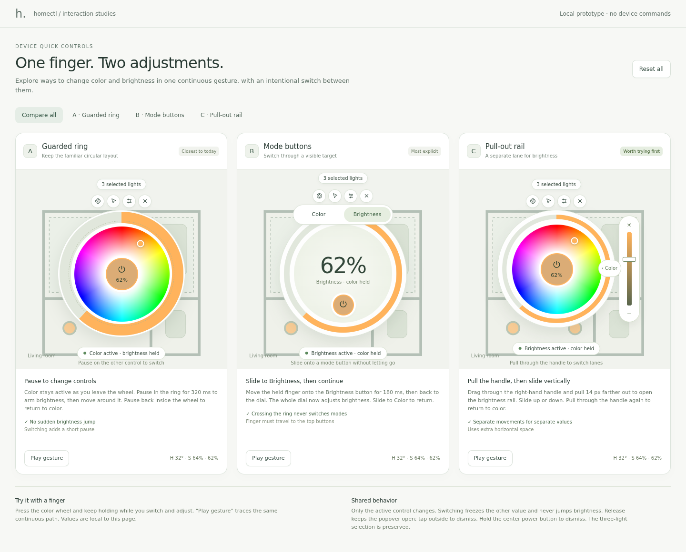
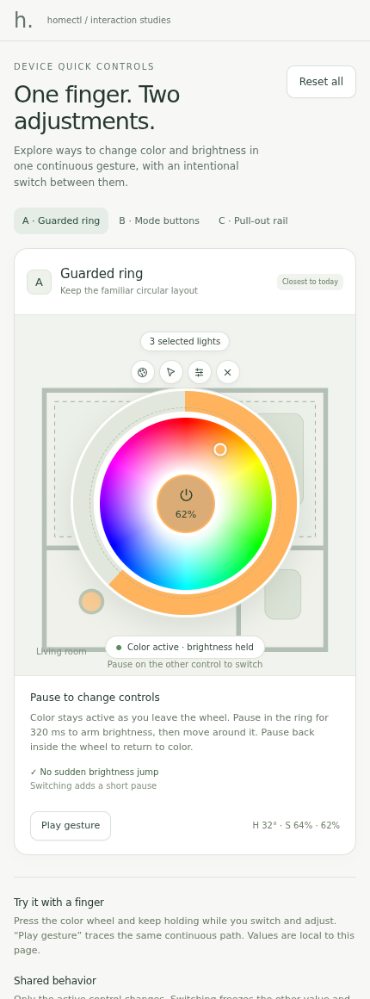
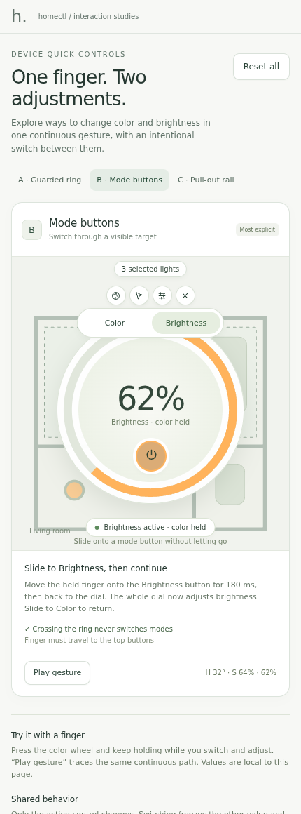
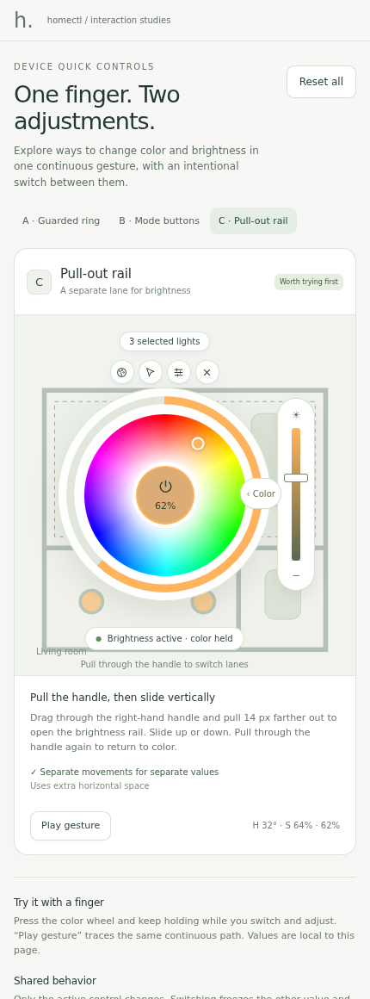

CONTINUOUS TOUCH GESTURES
Three ways to keep adjusting.
The selection controls are implemented. These switching gestures are alternatives to try before choosing one for the app.

A · Guarded ring
Pause on the other control to switch. The circular layout remains familiar.


Try guarded ring ↗B · Mode buttons
Slide onto Color or Brightness. The dial changes to the chosen control.


Try mode buttons ↗C · Pull-out rail
Pull through a deliberate handle, then adjust brightness vertically beside the color wheel.


Try pull-out rail ↗My starting preference
Try C first: its vertical brightness gesture differs clearly from the color wheel's angle and radius. A changes the existing layout the least; B has the clearest visible mode switch.
Choose by feel
Use a physical phone and keep the finger down throughout. All three hold the inactive value during adjustment. They differ in how you reach and confirm the switch, and how much travel or space that takes.